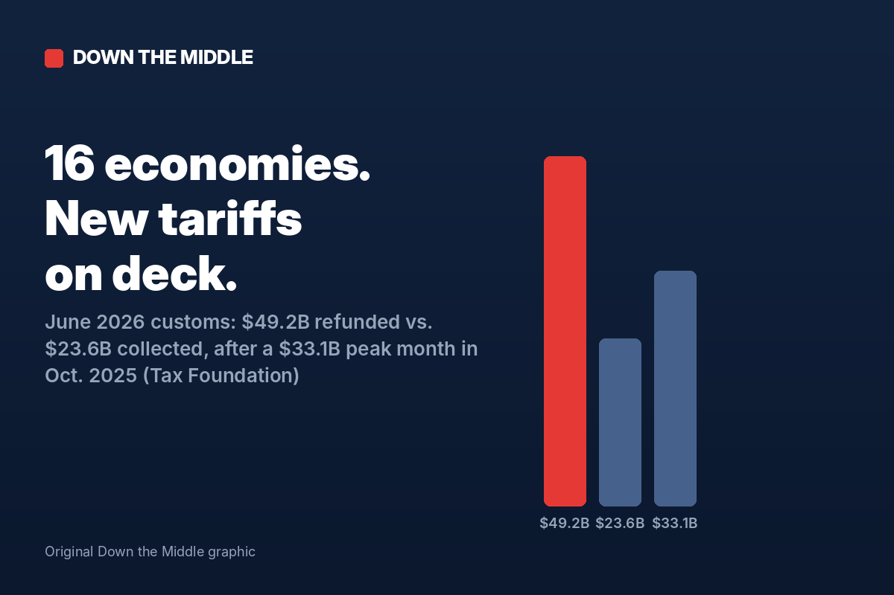
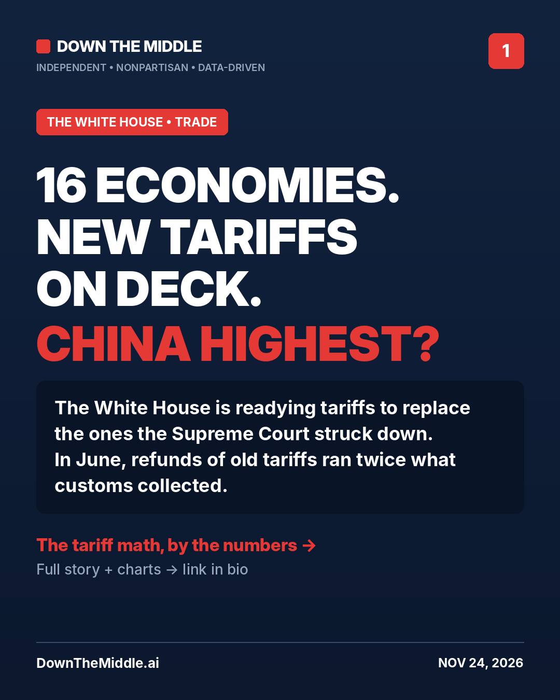
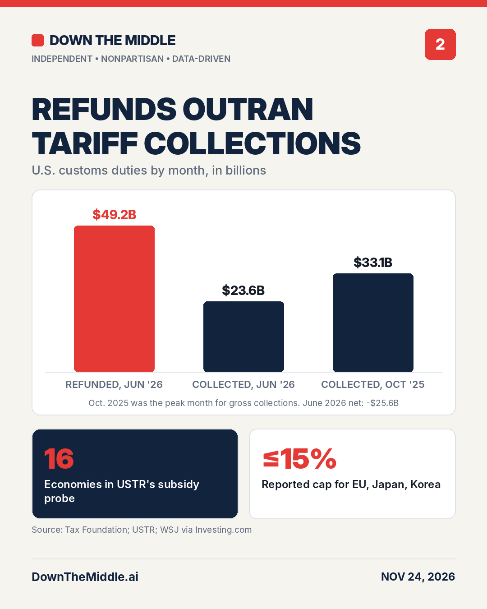

The White House Is Readying New Tariffs on 16 Economies. Here’s the Math From the Last Round.
November 24, 2026 · Independent, nonpartisan analysis

The Trump administration is preparing a new round of tariffs on China, the European Union and 14 other economies, The Wall Street Journal reported Tuesday. [1] [2] [3] U.S. Trade Representative Jamieson Greer could release the findings of a months-long investigation into foreign industrial subsidies as soon as this week, though the timing could still change. [1] [3] The goal, according to the reports, is to rebuild much of the sweeping tariff structure the Supreme Court struck down in February, this time under a different law. [1] [3] [10]
Nothing has been announced yet, and final rates haven’t been disclosed. [1] USTR declined to comment and the White House didn’t respond, according to IBTimes. [2] But the numbers from the last round of tariffs, and the refunds that followed the court’s ruling, show what’s at stake for importers, prices and the federal budget.
By the numbers
Documented and reported figures behind the new tariff plan.
What happened
On Feb. 20, the Supreme Court ruled in Learning Resources v. Trump that the president could not use the International Emergency Economic Powers Act to impose his 2025 tariffs. [10] The administration replaced them within days with a temporary 10% tariff under Section 122 of the Trade Act, which is limited to 150 days and expired July 24. [5] [10]
In March, USTR opened two investigations under Section 301, a trade law that lets the president act against unfair foreign practices after an investigation. [5] [6] [7] One targets forced labor in supply chains and led to 10% or 12.5% tariffs in July; those are being challenged in court. [1] [10] The other, the one now reportedly nearing a decision, looks at “structural excess capacity” in 16 economies: China, the EU, India, Japan, South Korea, Mexico, Taiwan, Vietnam, Thailand, Malaysia, Cambodia, Singapore, Indonesia, Bangladesh, Switzerland and Norway. [5] [6] [13] Canada is not on the list. [5] USTR heard from about 150 witnesses over four days of hearings in May. [8]
According to the Journal’s reporting, partners with trade deals (the EU, Japan and South Korea) would see overall rates capped at 15% or lower. India and Vietnam could face higher duties, and China the steepest. [1] [2] [3] Steel, aluminum and autos would likely be left out because they already carry separate national-security tariffs. [1] [3] The plan may also let rates rise further if overcapacity isn’t reduced. [1] S&P 500 futures were down 1.25% when Investing.com published its report. [1]
Tariff refunds outran collections this spring
Monthly U.S. customs duties collected vs. refunded after the Supreme Court ruling, in billions. Hover or tap a bar for the source.
Refunds are of tariffs collected under the emergency-powers law the court struck down. Monthly refunds never topped $2 billion during 2025. Net customs revenue was −$0.04 billion in May and −$25.56 billion in June. [9]
Insight 1
For two months, the government paid out more in tariff refunds than it took in
The most striking number in this story isn’t a new tariff rate. It’s the refund line. In June, the government refunded $49.18 billion in struck-down tariffs while collecting $23.63 billion in new duties, leaving customs revenue $25.6 billion in the red for the month. [9] May was roughly a wash. [9] Across the 2026 fiscal year, Customs collected $317.8 billion and returned $144.6 billion, for net duties of $173.2 billion, according to The Center Square. [11] By our math, refunds equaled about 45% of what was collected. And refunds go to importers, who aren’t required to pass them on to consumers, economist Phillip Magness noted. [11] So while importers recover old duties, the shoppers who paid higher prices generally don’t, and a new round is already being prepared.
The effective tariff rate is near an 80-year high
Customs duties as a share of all U.S. goods imports. Hover or tap a bar for the source.
2026 is a Tax Foundation estimate that excludes refunds. 2024: $78.9 billion in duties on $3.3 trillion of imports. 2025: $264 billion on $3.4 trillion. [10]
Insight 2
For U.S. allies, the reported rates are a modest step up, not a shock
Headlines describe “sweeping” tariffs, but for the EU, Japan and South Korea the reported numbers are an increase of a few points. They currently face 10% to 12.5%, and the new plan would reportedly cap them at 15%. [1] [4] The bigger jumps would fall on economies without deals. China’s general rate is 12.5%, and Bloomberg reported in August that an extra 7.5 points could take it to 20%, according to La Voce di New York; we couldn’t confirm that figure, and the Journal says only that China faces the steepest rates. [1] [4] A U.S.-China trade truce runs to Jan. 10. [4]
Where the reported rates would land
Current vs. reported tariff levels for selected partners. Gray is now; navy and red are reported, not announced. Hover or tap a bar for details.
Reported, not final: the 15% cap is from The Wall Street Journal’s sourcing; the 20% China figure is an August Bloomberg report cited by La Voce di New York and is unconfirmed. Final rates have not been disclosed. [1] [2] [4]
Insight 3
Democrats won Congress. That doesn’t give them the votes to stop this.
Democrats won a House majority and at least 54 Senate seats in this month’s midterms, and roughly two-thirds of midterm voters believed the tariffs hurt the economy, according to AP VoteCast as cited by La Voce. [4] [11] Even Sen. Ted Cruz (R-Texas) wrote the day after the election that “Tariffs have made everything too expensive.” [4] But Section 301 doesn’t require a vote of Congress, and overriding a veto would take 67 senators and 290 House members. [11] Senate Democratic leader Chuck Schumer’s bill to end the tariffs has 29 cosponsors and hasn’t left committee. [11] The likelier check is the courts, which are already weighing the July forced-labor tariffs. [1] [11]
How we got here
Solid dots are documented events. Dashed dots are reported or expected.
- Feb 20, 2026Supreme Court
Strikes down the emergency-power (IEEPA) tariffs in Learning Resources v. Trump. [10] - Feb 24White House
A temporary 10% Section 122 tariff takes effect, good for 150 days. [5] [10] - Mar 12USTR
Opens Section 301 probes: overcapacity in 16 economies and forced labor in 60+. [5] [6] - MayUSTR
Four days of hearings, about 150 witnesses. [8] - May–JunTreasury
Tariff refunds exceed collections; June net customs: −$25.6B. [9] - Jul 24USTR
Section 122 tariff expires; 10% or 12.5% forced-labor tariffs take effect and are challenged in court. [1] [10] - Nov 3Voters
Democrats win the House and at least 54 Senate seats. [11] - Nov 12Greer
Tells CNBC the administration will keep taking trade actions. [12] - Nov 24WSJ report
Overcapacity findings and new tariffs could come as soon as this week. Reported [1] [2] [3] - Jan 10, 2027U.S.–China
Trade truce expires. Expected [4]
How each side makes its case
Same tariffs, three readings
We describe each position in our own words and check it against the data.
The administration and supporters
- Subsidies in China and elsewhere create excess factory capacity that floods markets with cheap goods and undercuts U.S. producers. [4] [5]
- USTR says EU auto plants run at about 55% of capacity, and it points to Chinese automaker BYD expanding abroad. [5]
- Section 301 follows a formal process with comments and hearings. Greer says much of the food Americans buy carries no tariff, and that gas and oil “was never subject to tariffs.” [5] [8] [12]
Democrats and other critics
- Tariffs raise costs that consumers end up paying; Democratic leaders have vowed to end them. [11] [12]
- Voters agreed: about two-thirds in AP VoteCast said the tariffs hurt the economy, and some Republicans, including Cruz, say they made things more expensive. [4]
- Policy has changed more than 50 times since January 2025, which critics say makes it hard for businesses to plan. [9] [10]
What the data shows
- The effective tariff rate hit 7.7% in 2025, the highest since 1947, up from 2.4% in 2024. [10]
- The Tax Foundation estimates tariffs cost the average household about $820 in 2026, and projects $151.5 billion in new 2026 customs revenue. [10]
- Refunds wiped out customs revenue in May and June; FY2026 net duties were $173.2 billion after $144.6 billion in refunds. [9] [11]
Down the middle
Both sides have a point. Subsidized overcapacity is a real, widely discussed problem, and Section 301 is the trade tool Congress wrote for it: it requires an investigation, public comments and hearings, which the emergency-power tariffs skipped. [5] [6] [8] For allies with deals, the reported rates would rise by a few points, not double. [1] [4] At the same time, the data backs critics’ core claim that tariffs have raised costs: the effective rate is at its highest since the 1940s, the Tax Foundation pegs the household cost in the hundreds of dollars, and refunds of the old tariffs have mostly gone to importers rather than shoppers. [10] [11] Voters registered their view this month, but the law gives the president, not Congress, the next move. [4] [11] The real test is the fine print still unannounced: the final rates, which goods are exempt, and whether courts let this round stand.
What to watch
The announcement: whether USTR releases its findings this week, and the actual rates by country. [1] [3] China: how high its rate goes, and whether the Jan. 10 truce holds. [2] [4] Timing: July’s forced-labor tariffs took about seven weeks from proposal to enforcement. [4] The courts: the challenge to the July tariffs at the Court of International Trade, which could signal how judges view this round. [1] [11] Refunds: “well over half” of the illegally collected tariffs still hadn’t been returned as of the Tax Foundation’s count. [9] Congress: whether Democrats attach tariff limits to the Dec. 11 government funding fight, or move Schumer’s bill once the new Congress is seated in January.
Share it


Sources and primary documents
- [1] Investing.com, citing The Wall Street Journal — White House prepares sweeping new tariffs on China, EU, and dozens of nations (Nov 24, 2026)
- [2] International Business Times — Trump prepares new tariffs on China and dozens of countries; Beijing could face higher levies (Nov 24, 2026)
- [3] Business Today (India) — US plans fresh tariffs on India, China and other economies over industrial subsidies (Nov 24, 2026)
- [4] La Voce di New York — Trump prepares new tariffs on China, EU, Japan (Nov 24, 2026)
- [5] Reuters via Yahoo Finance — US launches unfair-trade probes to rebuild Trump’s tariff pressure (Mar 12, 2026)
- [6] Office of the U.S. Trade Representative (primary document) — USTR initiates Section 301 investigations relating to structural excess capacity (Mar 2026)
- [7] Federal Register (primary document) — Vol. 91, No. 51, Section 301 initiation notice (Mar 17, 2026)
- [8] Briefs — The U.S. just put 16 economies on notice over overcapacity (May 17, 2026)
- [9] Tax Foundation — Tariff refunds have wiped out tariff revenue since May (Aug 3, 2026; updated Sep 1)
- [10] Tax Foundation — Trump tariffs tracker: rates, revenue and impact (updated Nov 23, 2026)
- [11] The Center Square via Patriot TV — Democrats can’t end Trump’s tariffs without Republicans (Nov 9, 2026)
- [12] Crooks and Liars (progressive opinion) — Trump’s trade rep has an excuse for tariff pain: Democrats (Nov 13, 2026), quoting Greer’s CNBC interview
- [13] White & Case — USTR initiates Section 301 investigations of 16 U.S. trade partners (Mar 2026)
The 45% refund share and the “roughly twice” comparison are Down the Middle’s calculations from the figures above. The new tariff rates are as reported by The Wall Street Journal and have not been announced. The 20% China figure and the AP VoteCast result are as cited by La Voce di New York; FY2026 collection and refund totals and the veto math are as reported by The Center Square. Greer’s remarks are as quoted from his CNBC interview by Crooks and Liars. Household cost and revenue figures are Tax Foundation estimates.